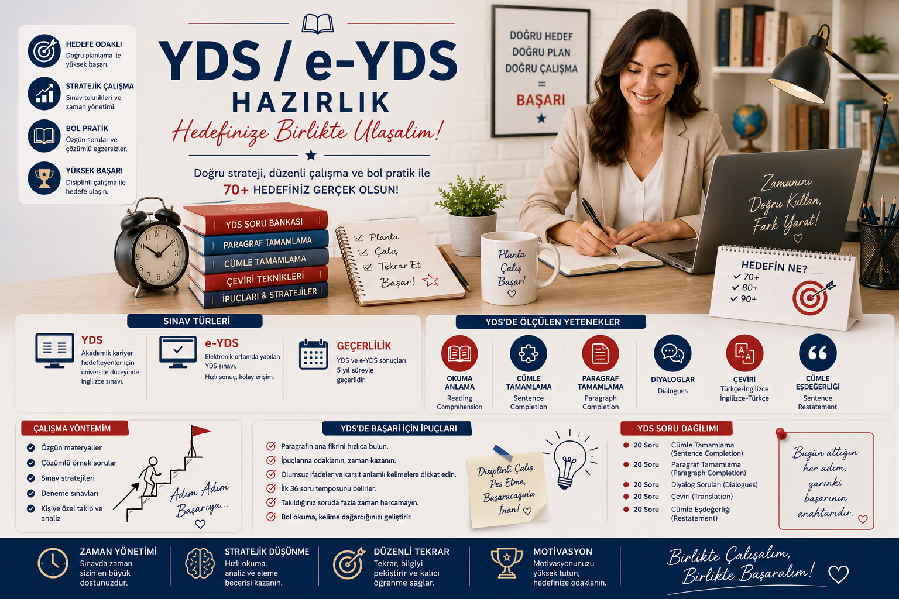
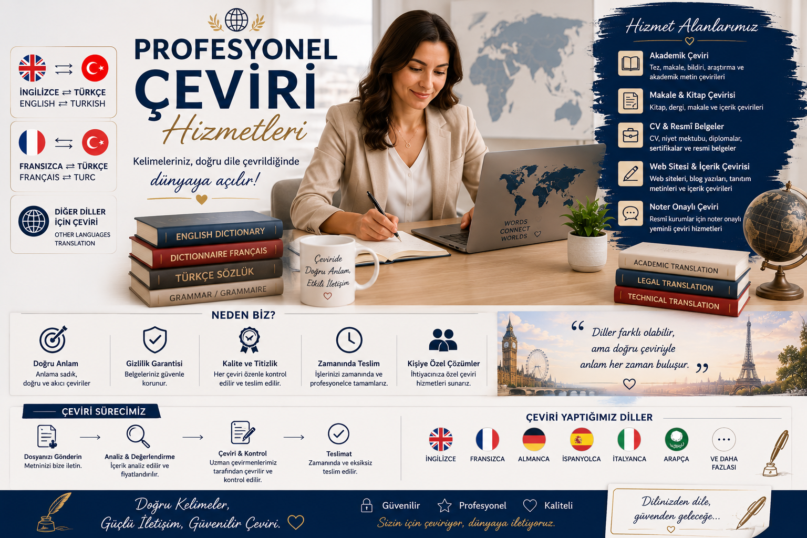
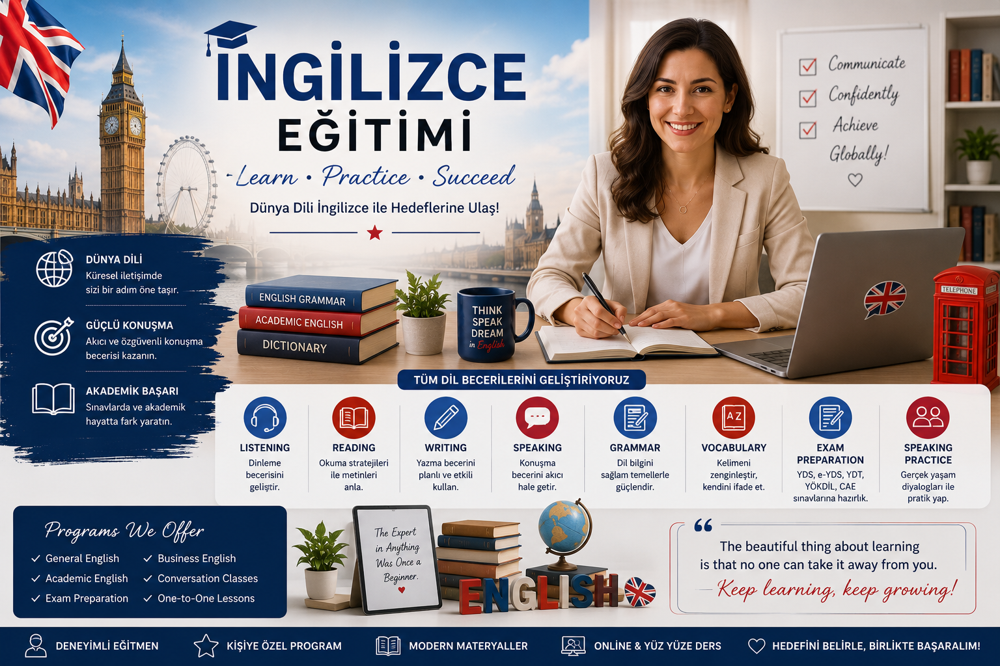
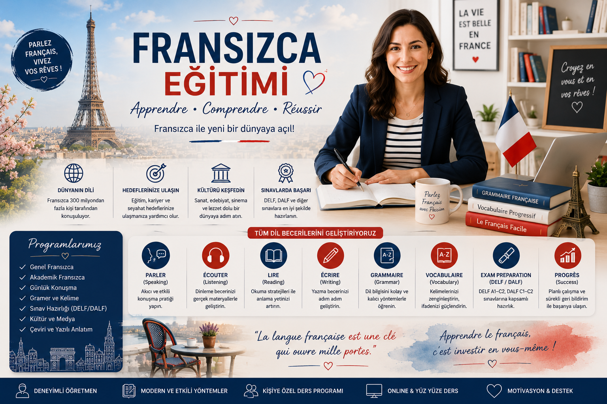
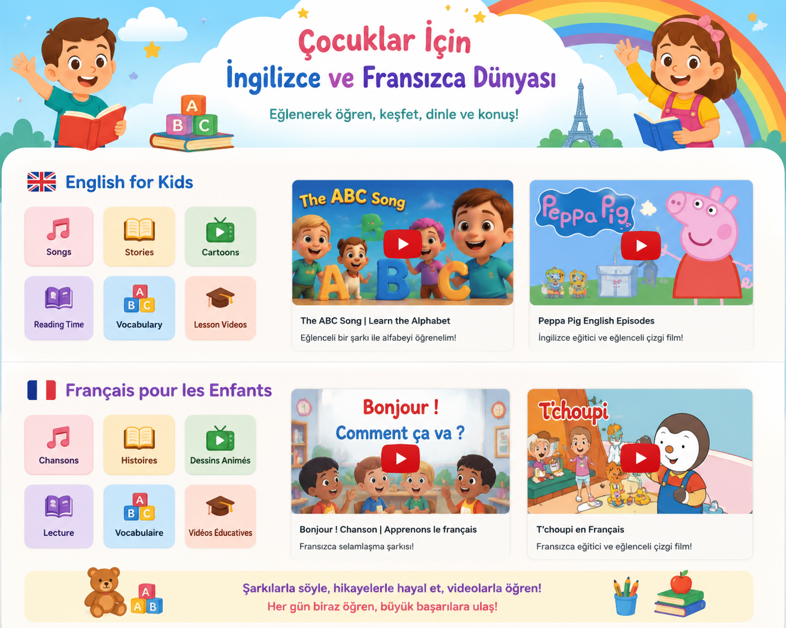
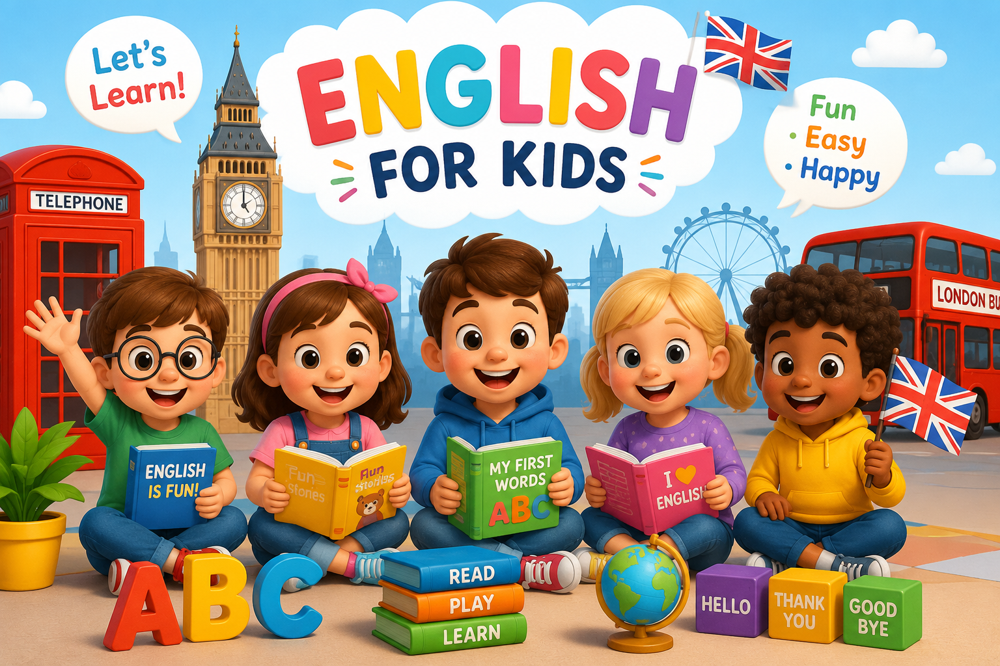
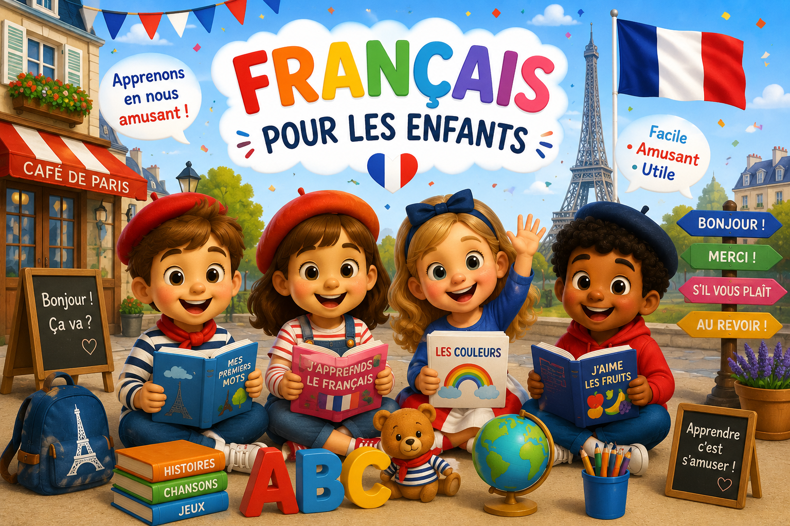
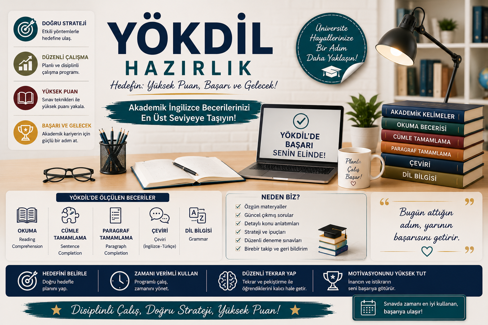

Esra K. Kadıoğlu
İngilizce • Fransızca • Türkçe Eğitmeni
Eğitim Koçu | Profesyonel Çevirmen
Eğitim Koçu | Profesyonel Çevirmen
Dil öğrenme, sınav hazırlığı ve profesyonel çeviri alanlarında kişiye özel eğitim ve danışmanlık hizmetleri sunuyorum.

Merhaba, ben Esra K. Kadıoğlu. İngilizce, Fransızca ve Türkçe alanlarında eğitim, sınav hazırlığı ve profesyonel çeviri hizmetleri sunuyorum. Öğrencilerime hedeflerine uygun çalışma planları, sınav stratejileri ve kişisel gelişim desteği sağlıyorum.

Başarıya ulaşmak için doğru hedef, doğru planlama ve düzenli takip önemlidir. Eğitim koçluğu ile öğrencilere çalışma programları, sınav stratejileri, motivasyon desteği ve hedef takibi sağlıyorum.

YDS, e-YDS, YÖKDİL, YDT ve Cambridge English C1 Advanced (CAE) sınavlarına yönelik hazırlık desteği sunuyorum.

İngilizce, Fransızca ve Türkçe dilleri arasında profesyonel çeviri hizmetleri sunuyorum. Akademik metinler, CV, makale, eğitim içerikleri ve özel çeviri çalışmalarında destek sağlıyorum.

Genel İngilizce, sınav İngilizcesi ve akademik İngilizce çalışmaları yapılmaktadır.

Başlangıç seviyesinden ileri seviyeye Fransızca öğrenme desteği.

Çocuklar için eğlenceli ve yaratıcı dil öğrenme içerikleri hazırlanıyor. Şarkılar, hikâyeler, okuma çalışmaları, kelime etkinlikleri, videolar ve kısa diyaloglarla İngilizce ve Fransızca öğrenme desteği sunulmaktadır.

İngilizce çocuk şarkıları, hikâyeler, oyunlar ve eğitici videolar.

Fransızca çocuk şarkıları, hikâyeler, oyunlar ve eğitici videolar.

Dil öğrenme kaynakları, okuma çalışmaları, kelime geliştirme içerikleri ve sınav hazırlık materyalleri hazırlanacaktır.
Eğitim, danışmanlık ve çeviri hizmetleri hakkında bilgi almak için benimle iletişime geçebilirsiniz.
Instagram | Telegram | E-posta